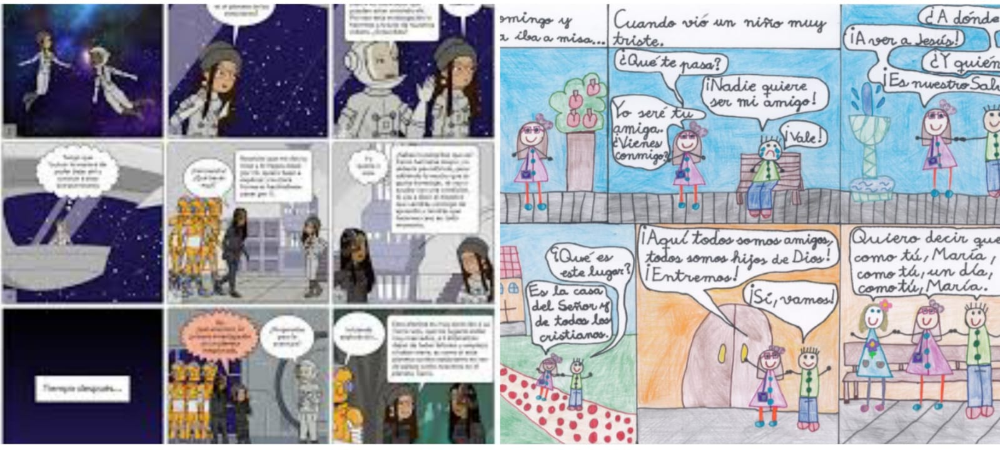

Don Quijote contra los gigantes
De todas las aventuras de Don Quijote, una de las más conocidas es aquella que le enfrentó en "singular batalla" contra los molinos de viento. ¿Sabemos qué es lo que le pasó a Don Quijote? ¿Conocemos el resultado de esta aventura? ¿Nos imaginamos qué pudo pasar?
Cuando hayamos respondido en voz alta (o por escrito) a estas preguntas, veremos un vídeo que presenta la aventura de los molinos.
Perú cultural académico. Don Quijote de la mancha y los molinos de viento.
Veremos el vídeo varias veces. Debemos estar muy atentos e ir tomando notas de temas como:
- El aspecto de los personajes (ropas, rostro, etc...).
- Los molinos de viento.
- Qué es lo que ocurre en la Historia (esta es para nosotros la parte más importante).
Tarea: "Resumir y contar a los demás la aventura de los molinos"
Escribiremos primero un resumen de la aventura y trabajaremos este resumen en grupo. Después, tendremos que contar esta aventura a toda la clase.
Nuestro resumen escrito
- Nos reuniremos en parejas o equipos de tres personas y compararemos las notas que hemos tomado.
- Trabajando juntos, tendremos que escribir un texto de tres párrafos en el que resumamos la aventura de los molinos.
- Copiaremos el resumen en nuestros cuadernos.
- En cada grupo o pareja, leeremos el resumen en voz alta.
- Para acabar, cambiaremos los cuadernos con otros grupos para revisar colaborativamente aspectos como la ortografía, la expresión... Puedes usar la lista de cotejo para evaluar resúmenes.
Contamos la aventura
- Los equipos tendrán que preparar una exposición oral breve (máximo cinco minutos) para explicar a los demás la aventura de los molinos.
- En clase, haremos esa exposición a todo el grupo.
- Podemos acompañar la exposición de recursos para proyectar. Por ejemplo, imágenes proyectadas en la pizarra digital, sonidos, textos... En CANVA puedes encontrar diversas maneras de presentar tu tema.
Viñetas y bocadillos
Vamos a contar la aventura de los molinos dibujando una historieta que luego podemos exponer en las paredes de nuestra clase.
- Revisa el vídeo que se presenta a continuación con las características y elementos de la historieta.
Aula 365. ¿Qué son las historietas? ¿Cómo se leen?
- Solo tenemos que usar una cartulina o un folio para crear una historieta de entre seis y diez viñetas. Debemos pensar en el texto, la imagen de los personajes, el diseño. Podemos hacerlo individualmente o por parejas.
- Observa los ejemplos.

https://www.religionenlibertad.com. www.gobiernodecanarias.org
- Al final del trabajo, organizaremos una exposición con todos las historietas.
- Al acabar, haremos una exposición con todas nuestras creaciones. Podemos hacerla en nuestra propia aula o en algún espacio del centro.
Incluso podemos hacer una versión digital de nuestro cómic, usando una herramienta como Pixton.
Obra publicada con Licencia Creative Commons Reconocimiento Compartir igual 4.0